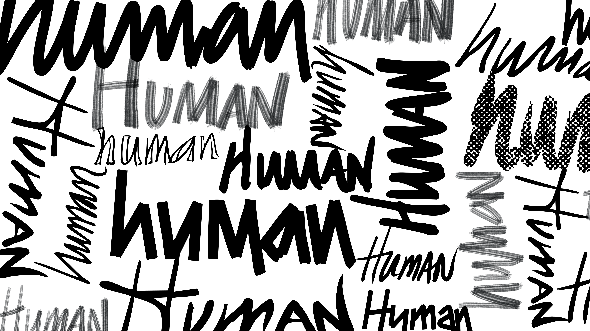

07 — Human First
A filosofia criativa. Um sistema à parte.
Human First é a filosofia criativa da VML, com um conjunto de assets visuais dedicado e mais restrito que o sistema de marca geral.
Logo Human First
Logo dedicado, em estilo "inky" (tinta) desenhado à mão. Não recriar com fonte ou ferramenta de IA. Traduções para outros idiomas só de forma bespoke por um artista, com aprovação.

Inky Spark
Conjunto dedicado de Sparks desenhados à mão. Não recriar — usar somente os arquivos existentes. Uso restrito a comunicações Human First.
Padrão de fundo
Gráfico hand-lettered customizado, usado como borda/textura adicional. Deve ser cortado (crop) para sangrar até as bordas da arte-final. Uso restrito a comunicações Human First.

Hand-lettering customizado
Apenas para apoiar expressões "Tier 1" de Human First. Feito de forma bespoke por um artista talentoso — não gerar com IA ou fonte pronta. Sem arquivo associado (produzido sob encomenda).
Vídeo institucional "Anthemic"
| Seção | Tempo | Flexibilidade | Regra |
|---|---|---|---|
| Intro | 00:01–00:48 | Não-flexível | Manter exatamente como está: footage, mensagem e visuais originais. |
| Messaging Reel | 00:49–02:25 | Flexível | Pode substituir footage por trabalho local, mantendo estilo e estrutura. Frase: "Human First and…" + mensagem-chave. |
| Ending | 02:25–02:53 | Parcialmente flexível | Recomendado manter; pode trocar footage, mas mensagem/visual/copy inalterados. Cenas centradas em pessoas. |
Watch-outs
- Não usar elementos Human First em comunicações não relacionadas a Human First.
- Não fazer lockup do logo Human First com o logo VML.
- Não depender fortemente das cores secundárias da marca — usar primariamente VML Black e VML White.
- Não alterar o logotipo VML para materiais Human First.
- Não replicar assets Human First com renders de IA ou fontes prontas.